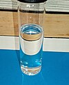

tetrachloroethene

Has synonym(s): tetrachloroethylene, perchloroethylene
Definition: Tetrachloroethylene, also known under the systematic name tetrachloroethene, or perchloroethylene, and abbreviations such as "perc" (or "PERC"), and "PCE", is a chlorocarbon with the formula Cl2C=CCl2. It is a colorless liquid widely used for dry cleaning of fabrics, hence it is sometimes called "dry-cleaning fluid". It also has its uses as an effective automotive brake cleaner. It has a sweet odor, similar to the smell of chloroform, detectable by most people at a concentration of 1 part per million (1 ppm). Worldwide production was about 1 million metric tons (980,000 long tons; 1,100,000 short tons) in 1985.
Source: Wikipedia
Wikipedia Page (Something wrong with this association? Let us know.)
Wikidata Page (Something wrong with this association? Let us know.)